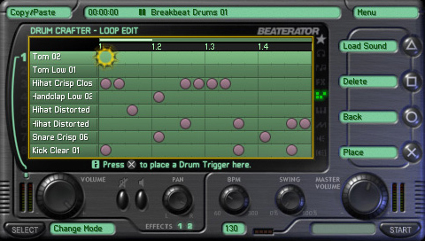
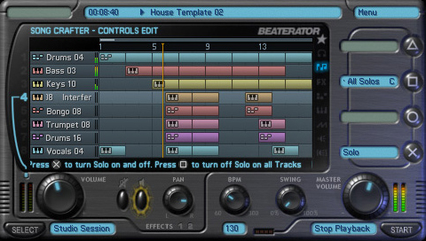
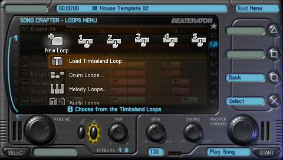
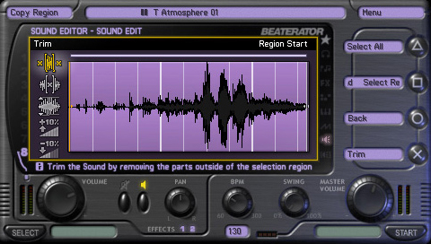

Beaterator

Descripción
Beaterator es una herramienta musical que nos permite crear nuestras propias composiciones de una forma sencilla e intuitiva. Desarrollado a partir de una versión web anterior, el juego pone a nuestra disposición un completo mezclador con el que podremos experimentar con ritmos, sonidos y melodías.
Cuenta con miles de loops y efectos de sonido producidos por Rockstar y el conocido productor musical Timbaland, que nos permitirán crear nuestras propias canciones y dar rienda suelta a nuestra creatividad.
En definitiva, una propuesta bastante diferente dentro del catálogo de Rockstar, que nos permite dejar a un lado los tiroteos y las persecuciones para convertirnos en productores musicales.
Capturas del videojuego




Información del videojuego
| Desarrollador | Plataforma | Fecha de lanzamiento |
|---|---|---|
| Rockstar Leeds | PSP | 29 de septiembre de 2009 |